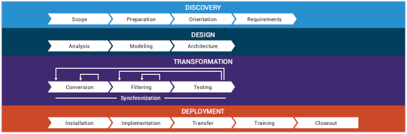

10.1 Appendix A: Sample Design
Integrated Maintenance Data Systems (IMDS) Central Database (CDB) Cloud Migration to Microsoft Azure
Note: This is a simplified description of a complicated set of projects. Please contact the proper PMO to get further details.
The BES IMDS PMO is leading a project to move the IMDS Central Database (CDB) mainframe application from the DISA DECC legacy UNISYS ClearPath Dorado OS2200 Mainframe on-premise hosting environment to the AF CCE 2.0 Microsoft Azure Government hosting environment on MicroFocus COBOL.
The goals were to introduce Agile and DevSecOps practices, reduce costs, modernize the technical stack, and enhance security by leveraging Azure Government IaaS and PaaS web services. ARRAY worked with the Cloud Migrator Astadia in the Discovery and Design phases to adapt Astadia’s Transformation Engine to implement automated code transformation from UNISYS COBOL to Micro Focus COBOL while maintaining all functionality, screens, and reports. The IMDS CDB data, which was hosted on the UNISYS Mainframe Data Management System (DMS) Database and RDBMS, was migrated using Astadia’s database conversion tools to Microsoft Azure SQL.
The modernization target was Azure Government Cloud infrastructure in order to address the DoD’s stringent security and compliance requirements and enable implementation of the CloudOne security add-ons to Azure Government. These add-ons consist of VDSS which provides traditional DMZ security for web applications and a next generation firewall for VPN access for SysAdmins and DBAs to protect cloud hosted workloads. Also implemented in the cloud were DISA’s VDMS to provide cloud connected management and security tools and privileged user access and management for DoD networks and users. Telos Xacta 360 is used for continuous security compliance monitoring.
Objectives
IMDS CDB is the AF base-level automated maintenance management information system. It provides wartime readiness and operational support of aircraft, trainers, simulators, communications-electronics, MRAPS and support equipment maintenance activities to world-wide operating bases, ANG and AFRC sites. The Air Force sought to modify IMDS CDB Software to comply with statutory/regulatory technical improvements and enable an infrastructure platform migration to reduce DISA annual operating costs of a critical maintenance documentation system. The objective was to Rehost (Lift and Shift) IMDS CDB to the Azure Government Cloud.
Key characteristics
The IMDS CDB application included:
- Runs on UNISYS Dorado 2200 mainframe at DISA DECCs
- Users: 237,178
- 82 Air Force Specialty Codes (AFSCs)
- Help Desk Calls: ~15,000 / year
- 2.8M online transactions per day
- 13 Interfaces
- 17 Subsystems
- System Uptime: 99.996%
- 3.11M Lines of Code, 4 Languages,
- Two Databases (DMS and RDBMS), 45K Function Points
Options Considered
USAF had previously researched Refactor and COTS solutions.
Selected Solution
Rehost - a rehosting strategy (Lift and Shift) was chosen in order to maintain the COBOL code base, but in a modern .NET framework running in the Azure Government Cloud. The Air Force chose this migration path and solution because it was lower cost and less schedule (time) than other approaches and the Air Force did not have a longer-term strategy for IMDS CDB in terms of lifespan or technology conversion. In addition, the Air Force decided this solution greatly reduced most significant technical debt items (i.e. DISA UNISYS Mainframe hosting cost and expected key staff / skills retirements).
Modernization Solution
The Air Force PMO used the Cloud One program’s engineering resources to perform analysis of the migration strategy and approach for IMDS CDB Cloud migration. Astadia was selected as the Cloud Migrator and ARRAY as the System Integrator. ARRAY is the contractor currently responsible for IMDS CDB application sustainment. Astadia and ARRAY coordinated with the AF Cloud One PMO’s Cloud Service Provider (Microsoft Azure) to develop the “To-Be” IMDS CDB cloud architecture based Azure IaaS and PaaS services and Astiadia’s OpenMCS emulation of the UNISYS OS2200 transaction processing, batch processing and terminal services. The IMDS CDB’s UNISYS Dorado 2200 DMS and RDBMS Databases was migrated to Azure SQL. The move from UNISYS Mainframes and the DMS and RDBMS database to open-systems platforms requires careful planning. While the potential exists to reduce costs and build compatibility, its realization depends on a thorough discovery and analysis of the UNISYS IMDS CDB application “as-is” architecture and design of a new “to-be” architecture in Azure Government cloud to enable the Air Force to quickly realize the value of the application modernization.
Application Modernization Phases
Once the Rehost (Lift and Shift) cloud migration strategy was decided upon, Astadia approached the project using their systematic cloud migration roadmap that consists of four phases: Discovery, Design, Transformation, and Deployment (Figure A-1). Each phase consists of several related activities and tasks that build on previous knowledge, prepare for subsequent phases and provide a valuable benchmarks and metrics for the progress of the project. ARRAY worked side by side with Astadia throughout the IMDS CDB phased cloud migration to make it a success.
Discovery
In the Discovery phase all IMDS CDB applications, languages, databases, networks, platforms, and processes in the UNISYS environment were cataloged and analyzed using Micros Focus Enterprise Analyzer. The interrelationships between applications and all external integration points were documented. In addition to Micro Focus Enterprise Analyzer, Astadia used their own specially-developed parsers, to analyze legacy code quickly and efficiently. This analysis output was used to establish the transformation blueprint of migration rules that are loaded into Astadia Code Transformation Engine during tool setup. These rules get updated and refined throughout the project.
 Figure A-1. Astadia’s Cloud Migration Roadmap. Excerpted from Astadia’s Mainframe Modernization: The balanced Path to Success dated 2016.
Design
After analyzing all the “as-is” source code, data structures, user interfaces, external interfaces, and end-state requirements, the “to-be” cloud migration design and architect is developed. The design includes the following details:
Integration with User Interfaces - Users access the mainframe application through green screen terminal emulators that provide character mode terminal interface (T27, UTS). A web-based terminal emulator or mobile application is built on top of the character mode interface which serves as a front end to the modernized application.
Batch Processing - UNISYS batch environments handle bulk data processing workloads. Jobs are submitted to the system (WFL, EFL) and processed with minimal operator interaction. Output from the batch jobs is spooled, printed and distributed to users. These batch processing services are replaced with Azure native cloud Windows PowerShell batch processing services.
Transaction Processing – UNISYS transaction processing is at the core of most mission-critical applications like the IMDS CDB with millions of transactions being processed daily. The UNISYS online processing environment (COMS, TIP) provides transaction processing security, integrity, and predictable response times for terminal workloads. Non-functional requirements in transactions per second, or terminal response times are often critical for UNISYS workload execution. This requires careful design and sizing of the underlying Azure network, computing, storage and monitoring for emulation of the transaction processing services in the cloud.
Programming Languages – UNISYS COBOL was used for developing IMDS CDB Applications. Code transformation to Micro focus COBOL is required to enable running the COBOL code on an open system x86 platform.
Data Files - Data files are sequential, direct access, fixed and variable lengths, blocked or unblocked, etc. Data in these files are stored in EBCDIC (Extended Binary Coded Decimal Interchange Code), an eight-bit character encoding system used primarily on UNISYS mainframes. These data files need to be converted to ASC and migrated to Azure Storage and Azure SQL.
Databases – IMDS CDB uses the DMS and RDBMS databases which must be converted to Azure SQL relational database services.
Environmental software – UNISYS Mainframes run software to support the management, operation, application development, and security of the system. These services need to be converted to Azure cloud native equivalents.
Scheduling software - is used to manage the execution of work flow streams. Output management systems handle the collection, storage and distribution of reports to the users that require them. Scheduling services need to be rearchitected to use cloud native scheduling services.
Mainframe source code version control systems - are used to maintain application source code by tracking version as well as release lifecycles. These services need to be converted to the Cloud One Azure DevSecOps Tooltrain.
Security - is tightly controlled at all levels of the UNISYS mainframe software. Azure cyber security software and the DISA SCCA add-on modules VDSS, VDMS and Xacta 360 will minimize the risk of data exposure and provide Cybersecurity regulatory compliance.
Integration with external systems – IMDS CDB partner systems integration must be preserved after migration. This includes protocols, interfaces, latency, bandwidth, and more.
In the following diagrams we describe the IMDS CDB cloud migration use case implemented in Astadia’s Azure reference architecture. Each implementation is sure to have its own customizations and variations, which is why Astadia and ARRAY conducted a thorough application portfolio inventory, assessment and rationalization.
The design, excerpted from Astadia’s Unisys to Azure Reference Architecture white paper, includes details such as Azure components, batch requirements, programming language conversions and replacements, integration with external systems, 3rd-party software requirements, and planning for future needs.
The core component of the architecture in Figure A-2 is Astadia’s Mainframe Cloud Framework, which uses a suite of emulators and utilities to execute the transformed legacy COBOL code. OpenMCS is Astadia’s Message Control System (MCS) that provides the necessary transaction processing features of COMS to support migrated COBOL code. This Mainframe Cloud Framework runs on Azure VM compute resources.
UNISYS Mainframe hierarchical and flat file data structures will be migrated to Azure SQL RDBMS solution. Elasticity of the solution is facilitated by Azure Load Balancer (ALB) along with Auto Scaling Groups.
The UNISYS COBOL is transformed to Micro Focus Visual COBOL for development in Microsoft Visual studio and Astadia’s OpenMCS is used for emulating the UNISYS transaction monitor. This combination allows migrating COBOL applications to Azure Windows with minimum change to the original source.
Some program functions may be replaced by the target Windows operating system or other target-platform components, so a gap analysis is performed to find the gaps in services. For example, legacy sort functions may be replaced by RDBMS SQL clauses. A data migration strategy is formulated. Flat files may be kept in their same legacy flat form, but Astadia converted them to relational in order to facilitate integration with modern Azure SQL-based tools, and to facilitate scalability and data integrity. UNISYS DMS and RDBMS data is converted to relational data using Astadia conversions tools and extract-transform-load (ETL) programs.
 Figure A-2. Migrating Unisys Dorado (Sperry) mainframe applications to Azure. Excerpted from Astadia’s Unisys to AWS Reference Architecture, dtd 2017.
Figure A-2. Migrating Unisys Dorado (Sperry) mainframe applications to Azure. Excerpted from Astadia’s Unisys to AWS Reference Architecture, dtd 2017.
Transformation
UNISYS COBOL code transformation to Micro Focus COBOL is performed in Development sprints utilizing Astadia’s Code Transformation Engine automated process to make mass changes to COBOL source code. This tool preserves the business logic and rules of legacy applications while removing proprietary code that can only execute in the source environment and not in Azure. The Transformation Engine’s code migration filters ensure the preservation of mission-critical applications and back-end components such as transcodes, security policies, interfaces and message routing.
If the modified code compiles, it’s ready for unit testing. If it doesn’t, developers review the errors, find a fix, update the migration rules, and run the program module(s) through the engine again. Many times, error fixes in one program may be applied to fix the same errors in other programs, to enable leveraging economies of scale.
As source COBOL modules go through the transformation process during Development Sprints, the Code Transformation Engine, with improved migration rules, gets faster and more accurate for migrating follow-on COBOL source code modules. This is because source code files tend to repeat the same coding patterns requiring the same transformation rules. Though the Rules-Based Transformation Engine is a proven technology, Astadia worked in collaboration with ARRAY to combine automated transformation and hand-code refactoring to replace those legacy components that would not migrate to Azure without sacrificing their original functionality.
In parallel with code transformation, database specialists performed a thorough analysis of the legacy databases and files and developed a detailed data migration strategy. An iterative extract, transform and load process was used to identify potential data-typing issues, develop fixes, and collaborate with ARRAY’s developers and DBAs to validate their accuracy. This iterative process continued until every issue was eliminated.
In most cases, the IMDS CDB UNISYS OS2200 flat file data structures, DMS and RDBMS Databases will be replaced with an Azure SQL RDBMS. Astadia has developed conversion tools that analyzes legacy data file layouts and database schemas, and then generates flat file and relational schemas for the target databases, as well as ETL programs, to migrate the data. Astadia’s DBCHECK validates the syntax of the Data and Structure Definition Language (DASDL) from DMS or RDBMS and saves it as an object file with a .DB extension. Astadia’s Database Convert (DBCVT) program then converts the validated DASDL to an SQL Data Definition Language (DDL) schema. This DDL required further analysis and modification by ARRAY’s DBA’s before it could be used to generate the final schema. After the target database and file structures have been created and validated, static data can be migrated to the Azure SQL instance production environment. For dynamic or other data that is created and/or modified frequently during production operations, a data migration strategy was implemented as part of production cutover process.
During testing, focus was on the code that has been changed. Testing included:
- Integration
- Data accesses
- Sorting routines that may be affected by using ASCII vs. EBCDIC
- Code modifications to accommodate data type changes
- Newly developed code
The Continuous Integration/Continuous Delivery (CI/CD) pipeline test processes executed from a non-mainframe web-based platform (emulating a T27 terminal) and followed the Air Force CloudOne DevSecOps best practices and Toolchain. It was recognized at the outset that the IMDS CDB had few, if any, automated test scripts and test documentation, thus much of the project team’s time and resources was spent to develop automated test scripts using the Eggplant Functional Test Automation tool (leader in Gartner Magic Quadrant and The Forrester Wave – 2018). Automated static code quality test tools were run in the CI/CD pipeline to validate coding standards and automated Static Application Security Test (SAST) and Dynamic Application Security Test (DAST) tools were run to validate security controls. Load and stress testing were performed to ensure the migrated IMDS CDB COBOL applications are prepared to handle high transaction volumes.
Azure Government Virtual Network (VNet) enables provisioning a logically isolated section of Azure where customers launch and manage interconnected resources in a virtual network that is define and secured with the DISA SCCA suite consisting of VDSS and VDMS.
Azure Virtual Machines (VMs) are provisioned to provide on-demand, scalable computing resources. Typically, a VM is chosen to give more control over the computing environment than other pre-configured choices offered. An Azure VM is dedicated to the web server, a VM is dedicated to Batch COBOL applications and another VM is dedicated to online transactions processing OpenMCS COBOL applications. Azure Storage uses an auto-partitioning system that automatically load-balances IMDS CDB data based on traffic. This means that as the demands on the application grow, Azure Storage automatically allocates the appropriate resources to meet them. IMDS CDB Legacy data is best managed on dedicated VMs running Azure SQL.
Azure Load Balancer (ALB) automatically distributes incoming web traffic across multiple VM web server and OpenMCS instances to achieve scalability, high-performance, and fault tolerance in the migrated IMCS CDB COBOL.NET applications. It provides the load balancing capability needed to route traffic evenly among the COBOL applications and keep them performing efficiently.
Azure Operations Management Suite (OMS) collection of cloud-based services allows IMDS CDB System Administrators and DBAs to monitor and manage the resources now running the legacy applications deployed to Azure. OMS collects and tracks metrics, monitors log files, set alarms, backup and restore critical data, and automatically reacts to changes in Azure resources. OMS is used to resolve problems quickly and keep IMDS CDB migrated COBOL applications running smoothly.
ARRAY SMEs identified potential application interface issues within the Azure cloud environment. For example, in the original design the IMDS CDB application would interface with the IMDS Web Services Microsoft Active Directory service which did not turn out to be possible. ARRAY SMEs also identified system monitoring enhancements to allow server error logs to be created and viewed as normal windows logs in the cloud hosting environment allowing for easier access by Systems Administrators. ARRAY also provided IMDS CDB application security enhancements by removing the duplicate CAC restriction functionality. This allowed users requiring multiple accounts associated with the same CAC ID to be able to select a particular user ID during sign-on.
Deployment
When migrated applications completed testing, verification and optimization, the process of deploying those applications began. In reality, many deployment activities are initiated in parallel with earlier phases—creating and configuring Azure instances, installing and configuring Mainframe emulation software (e.g. Astadia OpenMCS), migrating static data, and other infrastructure security monitoring or framework activities.
Development, Test, Staging and Production environments were replicated using the CloudOne Azure DevSecOps Toolchain. After User Acceptance Tests and Cybersecurity Testing is successfully completed and ATO achieved, then dynamic data will be migrated and validated so that cutover to production operations can be completed.
Customer Benefits
Expected Outcomes:
- 100% Native Cloud
- Maintainable, quality code
- Productive development paradigm where C#.NET coexists with COBOL.NET
- Mainframe DMS and RDBMS converted to Azure SQL
Lessons Learned
This project demonstrated to the Air Force that Rehost (Lift and Shift) with automated transformation projects are a viable approach to modernize major legacy UNISYS ClearPath Dorado OS2200 Mainframe COBOL applications to preserve the existing business rules within a cost-effective, open system architecture capable of migration to the cloud.
We can highlight specific lessons learned during this project:
-
AF identified key project risks:
- Risk 1: Testing (test and fix accounts for 50%+ of entire effort; used Eggplant automated functional test tool for automated functional testing and regression testing)
- Risk 2: CyberSecurity
- Risk 3: Refactoring and connecting external interfaces
-
Micro Focus toolset is robust and impressive for interim system modernizations
- COBOL is developed in Eclipse or Visual Studio (both are modern and easy to use)
- Java or C# developers should be able to code COBOL in these familiar and full featured integrated development environments.
- Micro Focus COBOL gets compiled to native COBOL.NET so it can use all of the .NET framework and Azure capabilities.
-
IMDS CDB in Azure Government Cloud runs primarily in one region and has a warm standby in a second region for geographic dispersion and disaster recovery. The warm standby can be switched to immediately for disaster recovery after any queued records process (usually less than 15 minutes)
-
Air Force believes operating in Azure Government Cloud with Micro Focus Development tools is more specialized and will require 100% contractor staff.